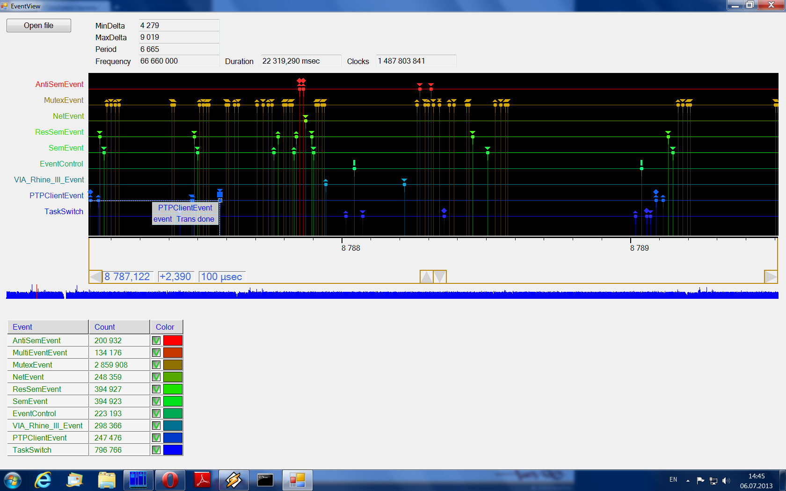

Files CCore/inc/EventRecorder.h CCore/src/EventRecorder.cpp
Files CCore/inc/task/TaskEvent.h CCore/src/task/TaskEvent.cpp
Event recorder is a tool to trace an application execution. It record events: small data structures with high-precision time-stamp and event id. An event may also contain some additional descriptive fields.
Event recorder is efficient, event record operation takes only a small number of CPU clocks. On XCore targets recording is permitted in any context, including interrupt context. Once recording if finished, you can save recorded data in a binary form and transport it to a host machine. Binary representation contains meta-information, which helps display events in a user-friendly fashion. The data format is standard. CCore has a prototype tool EventView to display and work with event records. You may also create and use your own such tools for your particular purpose.
There are two main event recording classes: EventRecorderHost and EventRecorder. The first serves as a recoding operation class. The second is a recording operation buffer. Normally, you create a global object of the first type (or use the default one) and use it for the event recording. Events are not recorded, unless some EventRecorder is attached to the EventRecorderHost.
EventRecorderHost<EventRecorder<EventRecorderAlgo> > Host;
void func()
{
....
Host.add<SomeEvent>();
....
}
int main()
{
....
EventRecorder<EventRecorderAlgo> recorder(10_MByte);
....
{
EventRecorderHost<EventRecorder<EventRecorderAlgo> >::StartStop start_stop(Host,&recorder);
....
}
....
return 0;
}
Both HCore and XCore provides default event recorders. They are declared in the header task/TaskEvent.h, included in the Task.h. To enable event recording, you have to uncomment the following line:
//#define CCORE_TASK_EVENT_ENABLE
and rebuild CCore. You may also comment or uncomment the lines:
#define CCORE_TASK_EVENT_ENABLE_SYNC #define CCORE_TASK_EVENT_ENABLE_PROTO #define CCORE_TASK_EVENT_ENABLE_DEV
to control the recording of the particular event classes.
Below is a default recoding object declarations:
/* struct TaskEventAlgo */ struct TaskEventAlgo { .... }; /* types */ typedef EventRecorder<TaskEventAlgo> TaskEventRecorder; /* class TaskEventHostType */ class TaskEventHostType { public: class StartStop : NoCopy { public: StartStop(TaskEventHostType &host,TaskEventRecorder *recorder); ~StartStop(); }; template <class T,class ... SS> void add(SS && ...); template <class T,class ... SS> void addSync(SS && ...); template <class T,class ... SS> void addProto(SS && ...); template <class T,class ... SS> void addDev(SS && ...); void tick(); }; /* global TaskEventHost */ extern TaskEventHostType TaskEventHost;
The class TaskEventAlgo contains some basic algorithms, required by the class EventRecorder. It is Core-specific.
TaskEventRecorder and TaskEventHostType are the default recorder and the recorder host types.
TaskEventHost is the default event recorder host, it should be used to record events.
To record an event you have to use one of the methods: add(), addSync(), addProto() and addDev(). They do the same thing: record an event. The difference is: some of these methods can be defined as NOP operations, by commenting the correspondent macros. It allows to filter out events by their sources. Sync events come from synchronization classes, Proto events come from protocols and Dev events come from device drivers. Any other events come from the application layer.
tick() is used to add tick events. You done need to call this method directly. On XCore it is called from the timer interrupt. On HCore there is a special task to generate this event. You have to start it manually.
The inner class StartStop starts and stops the event recording. Its constructor starts the process, the first argument is a recorder host, the second is a pointer to the recorder buffer. Destructor stops the recording.
This class implements the event recording logic and the recorder attach/detach logic.
template <class Recorder,unsigned GuardCount=1000000>
class EventRecorderHost : NoCopy
{
....
public:
EventRecorderHost();
class StartStop : NoCopy
{
....
public:
StartStop(EventRecorderHost &host,Recorder *recorder);
~StartStop();
};
template <class T,class ... SS>
void add(SS && ... ss);
void tick()
{
add<EventControl>(EventControl::Type_Tick);
}
};
StartStop is used to start/stop recording. Constructors starts operations, destructor stops them. The recorder must live while the recording is running.
add() adds an event. The event type must be provided as well as required by this type event arguments. The type must follow the event type class rules.
tick() adds the tick EventControl event. There is a special event type: EventControl. The start event of this types begins the recording, stop event ends it and tick events must be generated periodically.
The class EventRecorder is a recorder class. It stores recorded events.
template <class Algo>
class EventRecorder : NoCopy
{
....
public:
static const ulen RecordAlign = Algo::RecordAlign ;
explicit EventRecorder(ulen buf_len);
~EventRecorder();
template <class T,class ... SS>
void add(SS && ... ss);
template <class FuncInit>
void parse(FuncInit func_init) const // func(const EventMetaInfo &info,const EventDesc &desc,void *ptr);
// save/load object
template <class Dev>
void save(Dev &dev) const;
// print object
template <class P>
void print(P &out) const;
};
Constructor creates an object with the given event buffer capacity.
add() adds an event. The first template argument is the event object type and must be provided explicitly. If there is no enough space the event is discarded.
parse() iterates over the recorder content. For each recorded event the given functor is called with three arguments: EventMetaInfo constant reference, the event EventMetaInfo::EventDesc constant reference and the pointer to the event record.
save() saves the recorder content in a binary form to the given binary output device.
print() prints the recorder content (can be a large output).
You may find an example of the event recording in the test0101.PTP.cpp.
This is a core-specific structure with some basic algorithms.
struct TaskEventAlgo
{
static const ulen RecordAlign = 4 ;
static const uint64 TimeFreq = .... ;
class AllocPos : NoCopy
{
....
public:
AllocPos();
~AllocPos();
operator ulen() const;
EventRecordPos alloc(ulen len);
void back(ulen len);
};
};
RecordAlign is a memory alignment for event types. This value equals 4 both for HCore and XCore. It means any event type must not have stronger alignment requirement than this value.
TimeFreq is a time-stamp frequency. This value is 0 for HCore and a real timer interrupt frequency on XCore.
The last member is the class AllocPos. It is used to allocate a space for an event and time-stamp it. The implementation is differ on XCore than on HCore.
This class is used on HCore to inject tick events with 10 Hz frequency.
class TickTask : NoCopy
{
....
public:
TickTask();
~TickTask();
};
Constructor starts the tick task, destructor stops it. You should always use this class on HCore targets to properly time events, because the time-stamp frequency is unknown and may vary.
The class with the same name exists on XCore also, but it is empty.
Each event type must be a short POD structure with the following starting fields:
struct SomeEvent
{
EventTimeType time;
EventIdType id;
....
};
It must also have two methods: init() to initialize the object and Register() to register a type meta-information. The total structure length must not exceed 256 bytes.
struct SomeEvent
{
EventTimeType time;
EventIdType id;
....
void init(EventTimeType time_,EventIdType id_,....)
{
time=time_;
id=id_;
....
}
static void Register(EventMetaInfo &info,EventMetaInfo::EventDesc &desc);
};
Additional arguments of the method init() must be provided in the method add() during an event recording.
For example, the type EventControl is implemented as following:
struct EventControl
{
EventTimeType time;
EventIdType id;
uint8 type;
enum Type
{
Type_Start,
Type_Tick,
Type_Stop,
Type_End
};
void init(EventTimeType time_,EventIdType id_,Type type_)
{
time=time_;
id=id_;
type=type_;
}
static void * Offset_time(void *ptr) { return &(static_cast<EventControl *>(ptr)->time); }
static void * Offset_id(void *ptr) { return &(static_cast<EventControl *>(ptr)->id); }
static void * Offset_type(void *ptr) { return &(static_cast<EventControl *>(ptr)->type); }
static void Register(EventMetaInfo &info,EventMetaInfo::EventDesc &desc);
};
And here is the method Register():
void EventControl::Register(EventMetaInfo &info,EventMetaInfo::EventDesc &desc)
{
auto id_Type=info.addEnum_uint8("EventControlType")
.addValueName(Type_Start,"Start",EventMarker_Push)
.addValueName(Type_Tick,"Tick",EventMarker_Tick)
.addValueName(Type_Stop,"Stop",EventMarker_Stop)
.addValueName(Type_End,"End")
.getId();
auto id=info.addStruct("EventControl")
.addField_uint32("time",Offset_time)
.addField_uint16("id",Offset_id)
.addField_enum_uint8(id_Type,"type",Offset_type)
.getId();
desc.setStructId(info,id);
}
To register a type, you have to add a structure description to the given EventMetaInfo object and then complete the registration using the method setStructId() of the given EventMetaInfo::EventDesc descriptor object as shown above. To add a structure description you do the following chain call:
auto id=info.addStruct("Structure Name") // add a structure description
.addField....(....) // add a field description
....
.getId(); // get the structure description id
To add a field description you will need the "field cast function". This function takes a pointer to the structure and returns the pointer to the correspondent field. In the example above Offset_time(), Offset_id() and Offset_type() are such functions. You may use the following methods to add a field description:
StructDesc & addField_uint8(const String &name,OffsetFunc offset);
StructDesc & addField_uint16(const String &name,OffsetFunc offset);
StructDesc & addField_uint32(const String &name,OffsetFunc offset);
StructDesc & addField_enum_uint8(EventIdType id,const String &name,OffsetFunc offset);
StructDesc & addField_enum_uint16(EventIdType id,const String &name,OffsetFunc offset);
StructDesc & addField_enum_uint32(EventIdType id,const String &name,OffsetFunc offset);
StructDesc & addField_struct(EventIdType id,const String &name,OffsetFunc offset);
The first three methods describe fields of types uint8, uint16 and uint32. The next three describe "enum" fields. You have to provide an enum id. And the last one describes a "structure" field. You have to provide a structure id. You may use the const char * type to specify a name.
"Enum" types are, in fact, the types uint8, uint16 and uint32, but supplied with names for some values (and optionally event markers). To add an enum description you do the following chain call:
auto id_Type=info.addEnum_uint8("Enum name") // add an enum description
.addValueName(<value>,"name",<event marker>) // add a value description
.addValueName(<value>,"name")
....
.getId(); // get the enum description id
You may use the following methods to add an enum description:
EnumDesc & addEnum_uint8(const String &name); EnumDesc & addEnum_uint16(const String &name); EnumDesc & addEnum_uint32(const String &name);
The following method is used to add a value description:
EnumDesc & addValueName(uint32 value,const String &name,EventMarker marker=EventMarker_None);
You may specify an "append" function for enum:
typedef void (*AppendFunc)(EnumDesc &desc); EnumDesc & setAppendFunc(AppendFunc append_func);
This function is called for each enum description after the recording process is stopped to update value/name couples. There is a helper class EventEnumValue, which implements a run-time enum name allocation.
In some cases you may want to use the same meta type to define multiple meta types. You must use for this the EventTypeId template:
.addField_enum_uint8( EventTypeId<TypeReg>::GetId() ,....)
The structure TypeReg provides a registration method:
struct TypeReg
{
static EventIdType Register(EventMetaInfo &info)
{
return info.addEnum_uint8("Enum name")
....
.getId();
}
};
You may assign a classid to the event, using the method classId():
desc.classId<AnotherEvent>(); desc.setStructId(info,id);
An event descriptor is assigned the event classid, equals the event id by default. But you may assign a different classid. This value is used to group multiple event types into a group to help a visualization of events of related types.
EventMarker may be assigned to an enum value. This marker can be used by event visualization tools to show a marker on this event. There is a standard list of marker glyphs.
By convention, the marker from an enum field with a non-null markers is used to mark an event. The field with the name type is preferred over others.
enum EventMarker
{
EventMarker_None,
EventMarker_Up,
EventMarker_Down,
EventMarker_UpBlock,
EventMarker_DownBlock,
EventMarker_UpUp,
EventMarker_UpPush,
EventMarker_UpUpPush,
EventMarker_Push,
EventMarker_Inc,
EventMarker_Dec,
EventMarker_Wait,
EventMarker_Pass,
EventMarker_Tick,
EventMarker_Stop,
EventMarker_Error
};
EventControl is a special control event. It has the field type with possible four enum values:
enum EventControl::Type
{
Type_Start,
Type_Tick,
Type_Stop,
Type_End
};
The event Start is generated as the first event once the recording process is started. The correspondent marker is Push.
The event Tick is generated with some period during the recording process. The correspondent marker is Tick.
The event Stop is generated as the last event once the recording process is stopped. The correspondent marker is Stop.
The event End is not generated, but added during the saving operation as the last event to mark the end of the binary stream.
The class EventEnumValue can be used to update a value/name couple list of an enum at run-time.
#if 0
struct T
{
typedef uint16 ValueType;
static const ValueType Base = 10 ;
static const ValueType Lim = 100 ;
static const EventMarker Marker = EventMarker_None ;
};
#endif
template <class T>
class EventEnumValue
{
....
public:
explicit EventEnumValue(TextLabel name);
operator ValueType() const;
template <class Desc>
static void Append(Desc &desc);
};
You must declare a structure with some static members first. The members are: ValueType, Base and Lim. A value range from Base to Lim can be used to allocate a value with an assigned name. To allocate a value simply create an instance of the type EventEnumValue<T>. Constructor takes a TextLabel argument to specify the value name. The static method Append must be used as the append function when registering the correspondent enum meta-type. T::Marker is used when appending allocated values.
Binary output uses the big-endian byte order to represent base types (uint8, uint16, uint32, uint64). The following type representation is used to encode the meta-information.
enum Kind : uint8
{
Uint8,
Uint16,
Uint32,
enum_Uint8,
enum_Uint16,
enum_Uint32,
struct
};
enum Marker : uint8
{
None,
Up,
Down,
UpBlock,
DownBlock,
UpUp,
UpPush,
UpUpPush,
Push,
Inc,
Dec,
Wait,
Pass,
Tick,
Stop,
Error
};
type String
{
uint32 len;
uint8 text[len];
};
type List<T>
{
uint32 len;
T items[len];
};
type Value
{
uint32 value;
String name;
Marker marker;
};
type Enum
{
Kind kind;
String name;
List<Value> values;
};
type Field
{
Kind kind;
uint16 id; // id of enum or struct
String name;
};
type Struct
{
String name;
List<Field> fields;
};
type Event
{
uint32 struct_id;
uint32 class_id; // event id
uint32 save_len; // save length of an event record
};
type MetaInfo
{
uint64 time_freq;
List<Enum> enums;
List<Struct> structs;
List<Event> events;
};
An item id is the index in the correspondent item list.
time_freq may be zero. In this case time-stamp frequency is unknown and should be derived from tick events.
A binary output starts from the meta-information and followed by event records. The last record is the record of the EventControl event with the type equals End. Each event record starts from two fields:
type RecordPrefix
{
uint32 time;
uint16 id;
};
You may parse an event record using the event id. The rest of the event record is the list of fields of the correspondent structure (except first two). You may use also the save_len field of the event meta-info.
Time-stamp is represented using the uint32. As long as a periodic tick is present in the record with enough frequency you always may restore the extended time-stamp by the differentiation and the following reaccumulation of time stamps in a variable with higher value range.